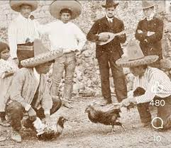
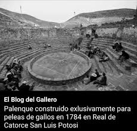
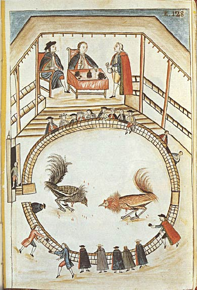

Para comprender a fondo el significado de los gallos de pelea en el Perú, es necesario detenerse en esos elementos esenciales que sostienen la tradición desde adentro. No se trata de un simple pasatiempo de fin de semana; para el aficionado, el gallo es un eje central alrededor del cual giran sus emociones más profundas, sus recuerdos más queridos y su propia escala de valores.Aquí expandimos la mirada sobre lo que realmente significa este animal en el corazón de la cultura peruana:El hilo invisible que une a las familiasLa crianza de gallos en el Perú es, ante todo, un asunto del hogar y de herencia viva. Rara vez alguien se convierte en gallero de la noche a la mañana por pura casualidad; casi siempre hay una línea de sangre familiar detrás. El gallo significa el recuerdo del abuelo mezclando el alimento en el patio, el padre enseñando a limpiar las plumas con paciencia y el hijo que observa en silencio aprendiendo el oficio.Esta tradición crea un puente generacional indestructible. En muchas casas peruanas, especialmente en la costa y en las provincias del norte y sur, los galpones (los espacios donde se crían las aves) son el corazón de la propiedad. El cuidado diario del animal exige disciplina: levantarse al alba, limpiar, alimentar y vigilar su salud. Cuando los miembros de una familia comparten esta rutina, el gallo se convierte en el lenguaje común que une a jóvenes y viejos, manteniendo vivos los recuerdos de los que ya no están a través del cuidado de las nuevas crías.La máxima expresión del mestizaje y el orgullo localEl peruano lleva el concepto de la mixtura en el ADN, y el gallo es quizás uno de los símbolos biológicos y culturales más perfectos de esa fusión. Cuando las aves llegaron en la época colonial, el territorio las adoptó, pero el verdadero cambio ocurrió siglos después con la llegada de la inmigración asiática. Los criadores peruanos, guiados por una intuición única, cruzaron el temperamento de los gallos europeos con la fuerza y el tamaño de las razas orientales.De ese encuentro nació el Gallo Navajero Peruano, un animal que no existe en ninguna otra parte del mundo y que es considerado por los aficionados como una obra de arte de la genética popular. Para un criador, ver a su ave no es solo ver a un animal fuerte; es contemplar el resultado de décadas de selección, de paciencia y de ingenio peruano. Es la misma lógica de orgullo que se siente por la gastronomía o por el caballo de paso: la satisfacción de haber tomado elementos de afuera para transformarlos en algo profundamente propio, único y reconocido a nivel internacional.Un espejo de virtudes y la búsqueda de la superaciónEn la mentalidad popular, el gallo deja de ser un ave para convertirse en una metáfora de cómo se debe afrontar la existencia. El gallero proyecta en el animal los valores más altos de la dignidad humana: el coraje, la nobleza y, sobre todo, el pundonor. En el argot criollo existe la frase "morir en su ley", y eso es exactamente lo que el gallo representa.El aficionado admira la postura del ave, su mirada fija, su temperamento imperturbable ante el peligro y su negativa rotunda a rendirse o "arrugar". En una realidad cotidiana que a veces es dura y cuesta arriba, el hombre peruano ve en su gallo un ejemplo de resistencia. Cuidar a un animal con esa casta es una forma de rodearse de esa misma energía, buscando reflejar en la vida diaria la misma valentía y entereza que el ave demuestra en cada uno de sus actos.Un pacto sagrado basado en la palabra de honorQuizás uno de los significados más conmovedores y escasos en la modernidad es el del coliseo como un templo de la confianza mutua. En una sociedad contemporánea donde todo requiere firmas, contratos, notarías y sospechas, el universo gallístico se rige por un código de honor que parece suspendido en el tiempo: la palabra del gallero.En las graderías de un coliseo, las interacciones no necesitan de documentos. Un acuerdo se sella con un cruce de miradas a través de la pista, un movimiento afirmativo con la cabeza o un grito que se pierde entre el clamor de la multitud. Cumplir con ese pacto no es una obligación legal, sino una cuestión de honor personal y familiar. El gallero sabe que su reputación es su activo más valioso; perder la confianza de la comunidad significa quedar desterrado simbólicamente de ese mundo. Por eso, el gallo representa también la pertenencia a una hermandad mística, un refugio donde la lealtad y la caballerosidad siguen siendo las leyes supremas que ordenan la convivencia.Al final, el gallo de pelea para la cultura peruana es un contenedor de nostalgia, un logro de la identidad mestiza, un modelo de conducta ante la adversidad y un pacto de caballeros que sobrevive al paso de los siglos.

Año: Circa 1900 (finales del siglo XIX o inicios del XX).Ubicación: México (época del Porfiriato).Lo interesante: Los sombreros de copa alta y ala ancha delatan inmediatamente que se trata de campesinos y charros mexicanos de la época. Es un registro fotográfico muy antiguo que muestra la preparación de las aves al aire libre, acompañado por un músico con un instrumento de cuerda de la época.
Año: 1784.Ubicación: Real de Catorce, San Luis Potosí, México.Lo interesante: Esta estructura no es peruana, sino un monumento histórico mexicano. Fue construida enteramente de piedra aprovechando la geografía del lugar e imitando la forma de los teatros romanos. Su diseño y acústica son tan perfectos que ha sobrevivido intacto al paso de los siglos.

Año: Entre 1782 y 1785.Ubicación: Trujillo, Perú.Lo interesante: Esta pieza sí es puramente peruana. Es una acuarela que el obispo Baltasar Jaime Martínez Compañón mandó a pintar para documentar las costumbres del norte peruano y enviárselas al Rey de España. Muestra la jerarquía de la época: las autoridades coloniales observan desde un balcón privado con mesa arriba, mientras los aficionados del pueblo rodean el ruedo de madera abajo.¿Que valor aporta para la cultura? Es una muy buena pregunta y aqui te enseñaremos porque tiene gran importancia para la cultura del pais entero ydescubre todo el valor sentimental y cultural de las peleas de gallos